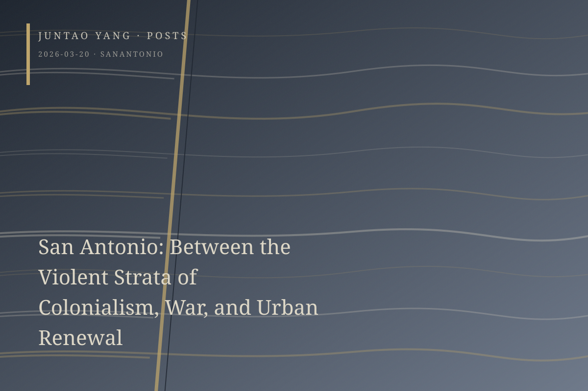

<content>
San Antonio is a symptom. Our task is to name it as fully as we can.
Even in San Antonio, one of the few American cities that continues to grow, heterogeneous temporalities are juxtaposed: prosperity at one scale, enervation at another. Pandemic-era low interest rates unleashed a burst of residential construction, only for overbuilding to leave some developments decaying and abandoned a few years later. Yet new luxury apartments are still rising at full speed next door to the ruins. This compressed heterogeneity occurs only in and around the River Walk. Farther out, a vast, complex, and inhuman Robert Moses–like highway system, built during the explosion of automobile culture, encircles the area, digesting it as poorly as an oyster trying to enclose a grain of sand. On foot, it is difficult to climb beyond this scabbed-over wound.
The Lone Star Republic, together with the flags that appear everywhere in its wake, is a fervently believed myth. From the fertile soil of the Alamo and the Menger Hotel—enriched by stratified corpses and ideological compost—it sends out tubers, swelling eutrophically toward the sun-blasted sentinels of the Mission Area until it occupies nearly every visible corner of the city. Yet the myth has been polished so carefully that every rusted or ulcerated part has been washed away. What remains is unexpectedly light, easy to pick up and carry home.
Across the street stands the Emily Morgan Hotel. Its earlier incarnation as the Medical Arts Building lends it a peculiar appeal: gargoyles embedded in the façade contort themselves into postures of illness, while legends insist that the building is haunted. I became dizzy on the fourteenth floor and heard something like a surgical cart rolling down the corridor, though I am certain the decrepit elevator was responsible. Below the building stands another Emily Morgan, a statue. She is one of the many women and racialized subjects whose histories have been disenchanted in order to be mythologized anew. Through a painless retelling of sexual violence as exotic romance, a free woman of color captured by an army is celebrated for allegedly “seducing” General Santa Anna in his tent and delaying him before the Battle of San Jacinto.
San Antonio’s geographic position accounts for its stratified cultural complexity. That complexity, however, has been reorganized, sterilized, repackaged, and presented through an elaborate aesthetic. If an example is needed, consider the celebrated light show projected onto San Fernando Cathedral. Dazzling and varied as its images are, Xavier de Richemont’s San Antonio \| The Saga narrates the city through an almost ironically periodizing montage: Indigenous life, early settler colonialism, independence, the Civil War, the early twentieth century, and postwar internationalization. The fractures between these periods are impossible to miss. They necessarily contain violence, exploitation, and oppression. Traumas that cannot appear within the promotional aesthetics of the city are displaced into the pressure accumulated along the montage’s periodic seams.
This aesthetic is most densely embedded in the River Walk. The decisive spectacle has earned San Antonio a reputation as an American Venice, though to me it resembles a desert oasis. Its surface narrates abundance through extravagant exoticism, Art Deco, and the late-arriving internationalism of late twentieth-century architecture, as in the renovation of the Shops at Rivercenter. The River Walk itself, however, began as a failed—or excessively premature—planning proposal. Even the purely utilitarian work-relief labor supplied by the WPA during the Great Depression did not bring the hoped-for revival. Its half-abandoned condition did not substantially change until HemisFair ’68. The Tower of the Americas is another legacy of that event, with the flying-saucer futurism peculiar to its period, reinterpreted in Men in Black as an enthusiasm and amusement that somehow remain underway.
The futurism and optimism of the 1960s urban-renewal campaign activated by the world’s fair resembled other utopian visions: the disaster and destruction produced by passion proved more terrifying than simple exhaustion. Cramped corners associated with mosquitoes, rats, and poison were eliminated at breakneck speed. Cheap shacks and the residents seeking an affordable life within them, treated as equally noxious, were swept away with the same implacability. A long but determined process of gentrification followed, spreading through the collusion of municipal government and capital. It bares its teeth with a severe expression, ornamented by the refinements of exotic charm. The River Walk’s carefully composed colors multiply in the water’s mirror, glittering and turbulent, designed to make the visitor surrender.
Between late-modernist buildings and Spanish Renaissance Revival architecture, Brutalism forms another parallel spectacle in the city, a companion to the optimistic force of the 1960s and 1970s. Yet its examples have been diminished into lower and less conspicuous positions, forced to discipline their ambition. As in many cities, dense parking garages and midcentury telephone exchanges became Brutalism’s refuge. The latter have declined until no one remembers their function; all that remains is the orderly pleating of wave-like walls, degraded into aesthetics. They now serve, with some irony, what Reyner Banham called “the architecture of the well-tempered environment.” The ideal of a double honesty, material and ethical, appears finally to have proved inhuman. Its uncompromising and purified sublime was reduced first to an indifferent and alienating technical rationality, then weakened into functionalism. These structures survive in mutual dependence with machines.
Their successors—late-modernist remnants assembled from cantilevered volumes, glass curtain walls, and precast concrete panels—are scattered through the Arsenal to the south and the Pearl to the north. Near the Arsenal, not far from the tree-lined King William Street built by European immigrants, what remains of the city’s critical attachment survives in the contemporary art of Ruby City and Blue Star. At the Pearl, a bankrupt brewery has been transformed into the city’s most fashionable hub of middle-class consumption. Refined taverns, together with the Culinary Institute of America, have helped make this city of Tex-Mex street food a UNESCO Creative City of Gastronomy.
Near Lackland Air Force Base, Air Force recruits repeatedly appear in the central city, wearing small triangular blue caps and surrounded by their families, their faces still young. They partly explain the city’s continuing prosperity. War is always profitable. After months of intensive training, these recruits have finally graduated from the base and are allowed into the city to relax. On the riverbank, beneath the shadow of the ambitious Hilton Palacio del Rio—famous for the modular construction used to complete it for HemisFair—and on the steps of the overnamed La Villita, people from the South are so effusive that they remove their hats and congratulate these unsmiling young strangers: “Congratulations.”
</content>
March 20, 2026
San Antonio: Between the Violent Strata of Colonialism, War, and Urban Renewal
San Antonio compresses colonial mythology, military profit, urban renewal, and gentrification into a sanitized yet visibly fractured urban stratigraphy.
